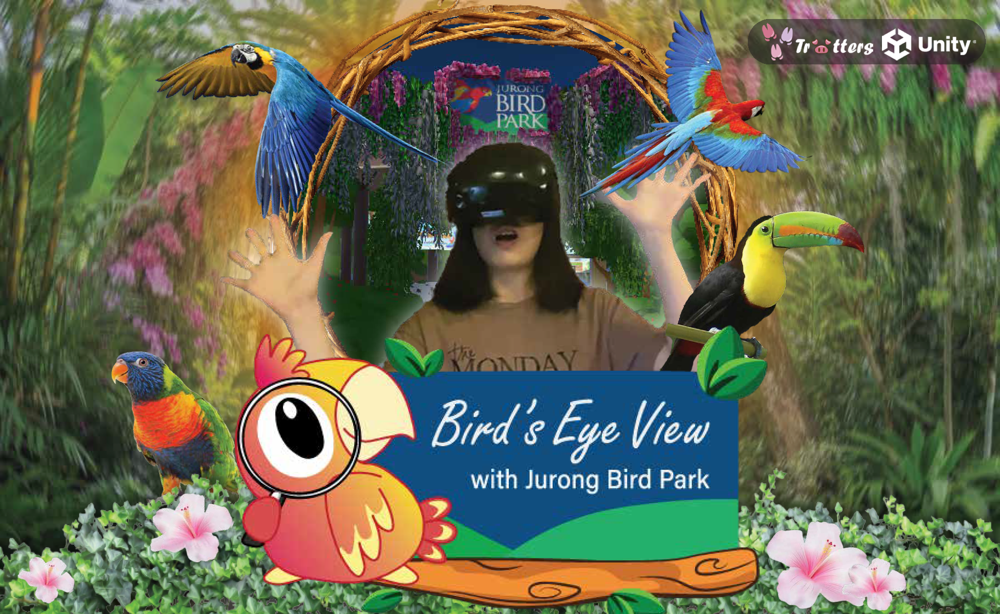
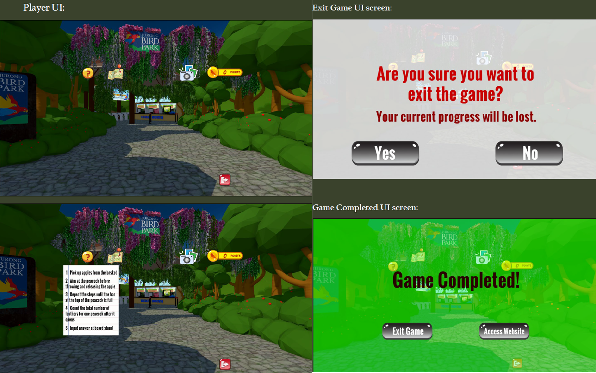
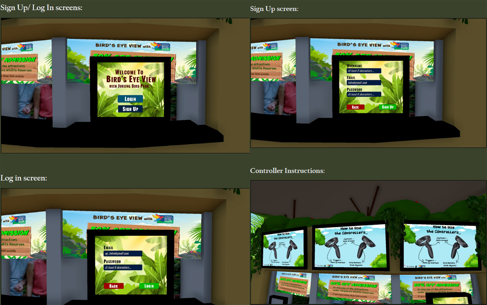
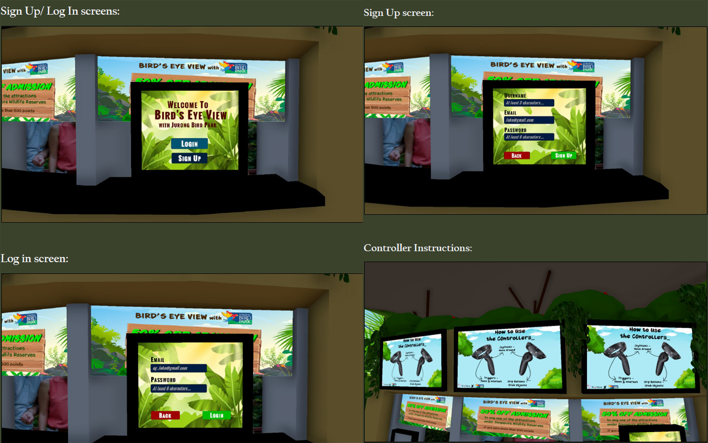

OVERVIEW
Background
Jurong Bird Park was an aviary and tourist attraction located in Jurong.
It opened in 1971 and closed in 2022. It will be reopened in Mandai Wildlife Reserve and renamed to Bird Paradise.
This Virtual Reality app brings the user around some of the popular recreated areas in Jurong Bird Park, allowing them to experience/re-experience it. These areas are the Entrance arc, Ticketing Booth, Penguin Coast, Pools Amphitheatre, Parrot Paradise, Waterfall Aviary, and Lorry Loft. Each area will be designed and built similarly to the actual location.
There will also be different interactive activities at each area except the Entrance and ticketing booth for users to be immersed in.
Users get to earn points when successfully completing the activities. With these points, rewards like Singapore Zoo vouchers can be redeemed.
It opened in 1971 and closed in 2022. It will be reopened in Mandai Wildlife Reserve and renamed to Bird Paradise.
This Virtual Reality app brings the user around some of the popular recreated areas in Jurong Bird Park, allowing them to experience/re-experience it. These areas are the Entrance arc, Ticketing Booth, Penguin Coast, Pools Amphitheatre, Parrot Paradise, Waterfall Aviary, and Lorry Loft. Each area will be designed and built similarly to the actual location.
There will also be different interactive activities at each area except the Entrance and ticketing booth for users to be immersed in.
Users get to earn points when successfully completing the activities. With these points, rewards like Singapore Zoo vouchers can be redeemed.
Name of App: Bird's Eye View
Logo Design

Target Audience
People who want to experience Jurong Bird Park in the past, which was before its closure.
Trailer Preview
Promotional Poster

VR Gameplay Video
Screenshots from Unity Prototype


